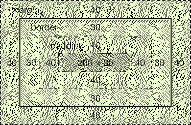
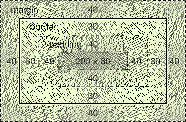

What is the difference between Margin, Border, and Padding?
<-- HomeMargin is used to push the elements apart
Border is used to outline an element
Padding is when you want to create space between the element and the border
Margin is used to push the elements apart
Border is used to outline an element
Padding is when you want to create space between the element and the border
